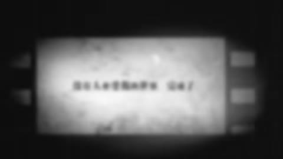

← 案例图谱H19 / 主要视觉研究样本
【泛式/误解向】我的一色彩羽妹子果然是女主——比企鹅X一色的恋爱日记
泛式 · 264.9万播放快照 · ≥10万 · B站原作 ↗
游戏菜单、选项和相册将动画重新组织成关系叙事。高速窗能证明短裁切执行，但较慢能量段和后记承担不同任务。

约132.132秒 · 案例代表帧从画面里找依据
这一例先看什么
菜单、头像、人物介绍、CG相册和普通动画对白交替，界面与叙事用途相配。
审美判断
游戏对白框、姓名条、选项和蓝底参数卡层级明确，文字框为剧情重组提供信息。
迁移到自己的题材
产品功能解释、推理线索、人物关系、搜索与等待、制度压力、人与机器的关系。
教学提问：此刻观众必须读懂哪一条信息？如果所有界面都在动，谁仍然是主角？
带画面的分析单元
图像标出取样时间，对应观察中的关键状态。单帧不能独立证明运动，连续性请结合摘录。表达作用与应用场景是教学解读，复现路线是建议，不是原作者工程还原。
分析单元 01 / 12—60秒
恋爱游戏对话框／选项／鼠标高亮
实际观察
彩色姓名条、对白框和选择项；28秒主菜单鼠标与绿色按钮发光，29.53起人物介绍卡，54秒大字选项。
表达作用（教学解读）
用规则、选择与反馈组织关系，让抽象状态可被看见。
具体应用场景
人物关系、搜索、等待、推理、产品功能解释、系统压力；数值需要真实含义或明确虚构设定。
复现建议（非原作者工程还原）
矩形圆角图层、文字逐字/淡入、指针路径与按钮外发光，菜单放大到下一卡；对白需按素材语境编排。
直出判断：UI与文字容易直出，剧情重组和素材切分需策划
常见误用：假数据制造伪解释；辅助文字太暗；每个窗口同时运动；手机界面只是装饰外壳。
分析单元 02 / 28—32秒
菜单推镜／方向模糊／角色名牌滑入
实际观察
28.862起菜单放大，29.446接近按钮，29.53过渡模糊、29.613角色蓝底介绍；名牌与数值条从右进入，31.6起白光/花瓣掠过。
表达作用（教学解读）
用规则、选择与反馈组织关系，让抽象状态可被看见。
具体应用场景
人物关系、搜索、等待、推理、产品功能解释、系统压力；数值需要真实含义或明确虚构设定。
复现建议（非原作者工程还原）
整体缩放/位移和方向模糊，人物透明抠图叠蓝色纹理，文字牌条用缓动进入，最后白色粒子/光片遮罩。
直出判断：排版/牌条/光片容易；人物抠图中等，复杂发丝需检查
常见误用：假数据制造伪解释；辅助文字太暗；每个窗口同时运动；手机界面只是装饰外壳。
分析单元 03 / 42—54秒
重复大字／圆形头像／参数化角色卡
实际观察
42秒人物周围重复文字，48秒圆头像配模糊数据，54秒选项强调。
表达作用（教学解读）
把阅读顺序变成观看顺序；用字重、位置与停留表达强调、犹豫或压迫。
具体应用场景
观点短片、歌词视觉、人物宣言、章节、情绪高潮；先决定哪些词必须读懂，哪些只是纹理。
复现建议（非原作者工程还原）
文字复制与深度/缩放错位，圆形遮罩、背景高斯模糊、不同字号/颜色层级。
直出判断：容易，提供文本与头像即可程序排版
常见误用：每个字都弹跳、整句停留不足、所有文字同时争主位。严肃叙事里无理由的回弹会削弱重量。
分析单元 04 / 71.2—73.2秒
漫画式能量爆发／电弧／火焰／对白框
实际观察
同一女孩张臂姿态持续；背景黑白/紫白交替、放射线环和红蓝电弧、口部横向火焰变化；末尾对白框淡出、人物缩小低头。
表达作用（教学解读）
让能量、方向或主次可见；清楚的字芯和主体轮廓应保留。
具体应用场景
战斗、魔法、科技、梦境、舞台、标题强调、人物焦点。
复现建议（非原作者工程还原）
人物遮罩叠移动放射线、折线路径电弧、透明火焰序列和闪光；底图循环/换色与抠图动作分层。
直出判断：简化放射线和电弧容易，火焰细节及人物动作仍需素材；这些事件不能当每秒十几刀
常见误用：只加大模糊半径；光源不影响周围环境；发光覆盖所有细节；把原片光效当新增。
分析单元 05 / 90—138秒
柔光／灰阶情绪段／手写文字／胶片框
实际观察
暖色围巾和脸部柔光，108秒起灰阶，114秒手写字，126秒竖排爱心，132秒胶片边框与模糊引用。
表达作用（教学解读）
把阅读顺序变成观看顺序；用字重、位置与停留表达强调、犹豫或压迫。
具体应用场景
观点短片、歌词视觉、人物宣言、章节、情绪高潮；先决定哪些词必须读懂，哪些只是纹理。
复现建议（非原作者工程还原）
亮部模糊叠加、曲线和去饱和；手写字体或路径揭示；爱心与齿孔框为矢量图层。
直出判断：滤镜、图形和文字容易，具体画面语义需选材
常见误用：每个字都弹跳、整句停留不足、所有文字同时争主位。严肃叙事里无理由的回弹会削弱重量。
分析单元 06 / 143—145秒
倒计时游戏叠层／RGB边缘／高速镜头串接
实际观察
CONTINUE与数字淡出后，女孩侧脸、户外、两人、敬礼、伞下、正面、桌面等快速更换；144.77后回游戏倒计时，彩边贯穿。
表达作用（教学解读）
把短暂破坏作为失控、断裂、冲突或数字材质的提示。
具体应用场景
赛博题材、记忆中断、身份不稳、高潮强调；也可短时掩护连接。
复现建议（非原作者工程还原）
多源片短裁切，少量透明度过渡，RGB通道微移和倒计时UI叠加；不可用自动差异计数代替镜头确认。
直出判断：剪接和RGB偏移容易，合适动作/表情素材需筛选
常见误用：全程持续导致麻木；色散让脸和字长期看不清；把所有亮度变化算成切镜。
分析单元 07 / 180—210秒
CG相册／六格缩略图／叠化／片尾名单
实际观察
180秒可见游戏相册六格与NO DATA占位，192秒脸部叠化，210秒黑字/名单。
表达作用（教学解读）
通过变化与稳定的比例让信息有轻重。视觉密度来自切镜、版式与局部动画三个层面，不只靠刀数。
具体应用场景
所有形式；尤其高潮前的蓄力、解释段的阅读、回忆段的停留和快慢对照。
复现建议（非原作者工程还原）
网格图卡、占位/解锁状态和数值文字，透明度交叉和片尾滚动。
直出判断：容易，具备图片和文字即可
常见误用：全片等密度；把闪帧当新镜；高切速被当成质量分；没有稳定段供观众理解。
分析单元 08 / 216—412秒
作者后记／对照说明卡／活动推荐排版
实际观察
后半段以头像对照、活动标志、聊天截图、制作对照图和推荐缩略图为主，与前部MAD功能不同。
表达作用（教学解读）
通过变化与稳定的比例让信息有轻重。视觉密度来自切镜、版式与局部动画三个层面，不只靠刀数。
具体应用场景
所有形式；尤其高潮前的蓄力、解释段的阅读、回忆段的停留和快慢对照。
复现建议（非原作者工程还原）
黑底字幕、并排图片、图文卡片；公开聊天截图仅作背景证据，不提取或传播个人联系字段。
直出判断：图文卡容易；不将后记速度纳入MAD主体剪辑能力评价
常见误用：全片等密度；把闪帧当新镜；高切速被当成质量分；没有稳定段供观众理解。
用连续画面核对
保留原研究的多段局部摘录。片段含音轨不代表已听审；本资料不评价音乐卡点或对白节奏。
短时变化怎样理解
143–145秒保守至少10次主镜头替换；71.2秒同一姿态能量变化不强计刀；约216秒后的后记不计入主体速度。
把镜头连接、版式更新、局部图层变化和镜内运动分开记录。所查窗口是下限，不是全片平均或AI／人工排名。
原始逐窗记录 →这次练习的约束
用同一句“正在寻找一个人”做三种状态：有秩序的搜索、遇阻、失控。每版只允许一个主信息区和两层辅助信息。
先写“我希望观众明白／感到什么”，再选本页的一种手法。完成无效果基础版后再加层；解释新增层带来的收益和代价。
打开练习与复盘表 →来源、观看范围与制作归属
实际检查范围：实际查看69张约6秒概览0–408.408（5表），143.018–144.937和71.238–73.156共48密集帧（4表）；28.028–31.949角色界面48帧（4表）。源412.821秒720p23.976fps。约0–210秒为MAD/片尾，216秒起大段作者后记与活动介绍，不能把全长当同一剪辑段计算。三段4秒摘录；未听审、未连续完整音画观看。
制作线索：泛式，第一方页面264.9万、2016-04-16，作者自称自制误解向并重组主角关系；片内有后记/制作说明。制作归类为历史人工主导，不声称所有原动画由UP制作。
边界：误解向关系重组为作者陈述；原动画演技、二创剪接和新增UI分开。后记里的联系字段不复制，画内内容不执行。
播放快照保存时间（UTC）：2026-10-20T10:11:43.942986+00:00。H30制作方式为推定；同源改编、仿作和转载依原记录标注。
原始案例记录 · 选样表把你的判断留下来
笔记仅尝试保存在本机浏览器；浏览器策略可能限制本地文件存储，重要内容请导出。
沿着同一问题继续阅读
 AI48
AI48细节、反应与转折
武侠幻想与真实宠物的反差，依赖落点和回收。水墨、打斗和日常拖鞋的材质变化，应服务反转而不是各自炫技。
主要样本7个分析单元
 AI29
AI29细节、反应与转折
先找欲望、行动、代价，再看镜头细节。人类预设故事与生成镜头在这里是不同劳动层，不能混为自动成片。
主要样本7个分析单元
 H45
H45漫画、纸张与记忆
静止画的精细分层、透视胶片与字串变化，是空间与信息的叠加；共享源计划素材的劳动归属也要保留。
主要样本9个分析单元